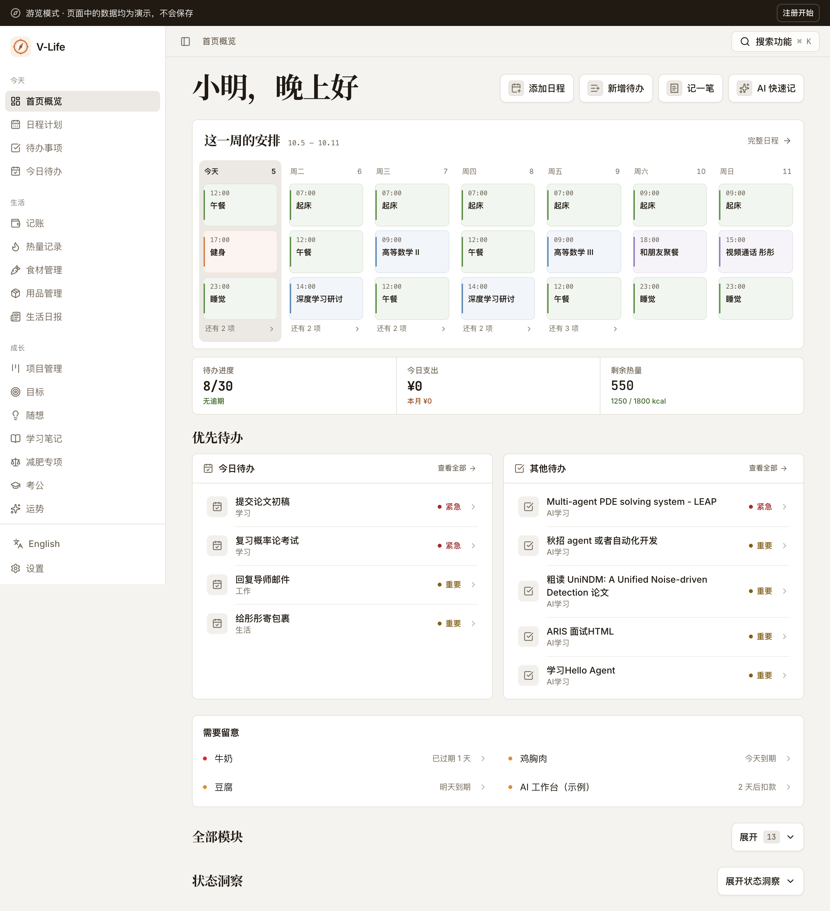
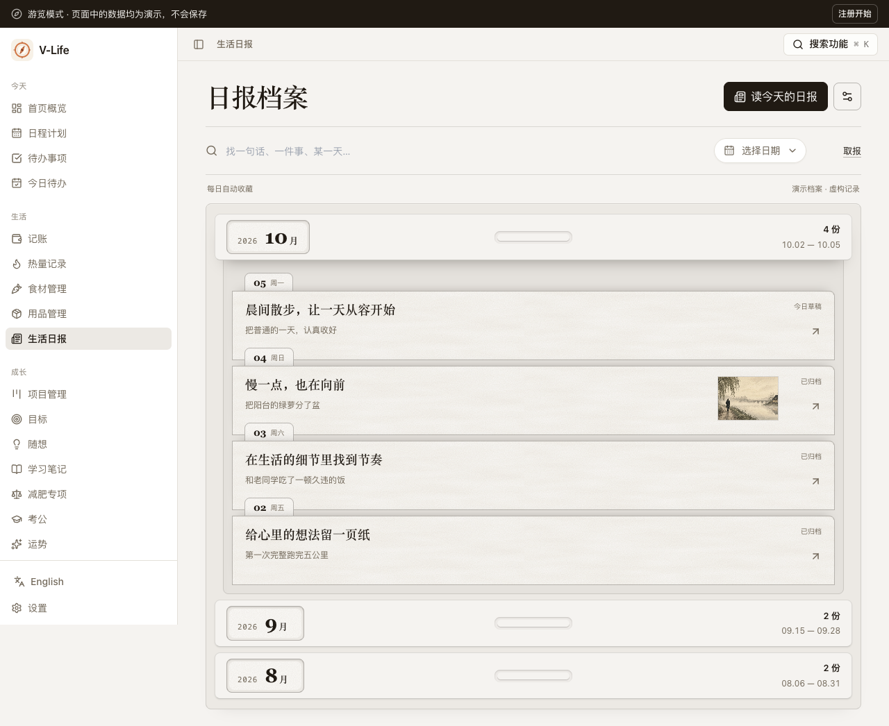

<!doctype html><html lang="zh"><meta charset="utf-8"><meta name="viewport" content="width=device-width,initial-scale=1"><title>V-Life · 日程与日报</title><style>*{box-sizing:border-box}body{margin:0;background:#f5f3f0;color:#201a13;font:15px/1.6 system-ui}main{max-width:1100px;margin:40px auto;padding:0 24px}h1{font:600 34px 'Songti SC',serif;margin:0 0 8px}p{color:#70695f}nav{display:flex;gap:12px;flex-wrap:wrap;margin:24px 0}a{color:inherit;background:white;border:1px solid #ddd7ce;border-radius:8px;padding:10px 16px;text-decoration:none}a:focus-visible{outline:2px solid #70695f}img,video{width:100%;border:1px solid #ddd7ce;border-radius:8px;background:white}h2{font:600 24px 'Songti SC',serif;margin:36px 0 12px}video{max-height:680px}</style><main><h1>把内容放到眼前</h1><p>首页直接扫读这一周的安排；日报从档案里取出，展开阅读，再收回原处。</p><nav><a href="/" target="_blank">体验首页 ↗</a><a href="/newspapers" target="_blank">体验生活日报 ↗</a><a href="comparison.html">首页前后对比</a></nav><h2>真实安排，一眼可见</h2><h2>从档案到阅读</h2><video controls playsinline preload="metadata" poster="verified-archive-desktop/page.png" src="verified-paper-motion/record.mp4"></video><p>演示包含展开、收回，以及展开途中按 Esc 反转。</p><h2>每一份，都能看见内容</h2></main></html>